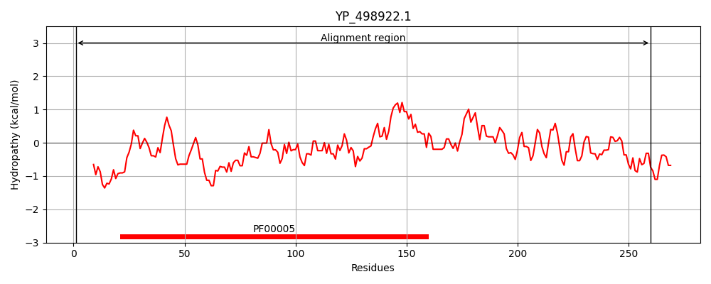
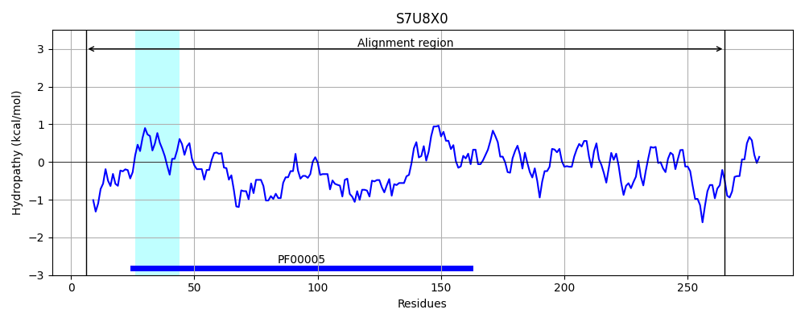
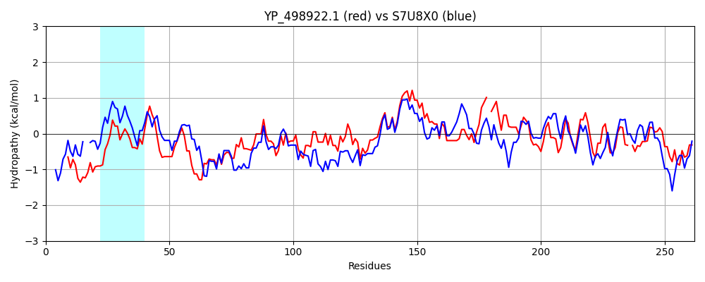

Hit Accession: S7U8X0
Hit TCID: 3.A.1.149.3
Hit Description: gnl|BL_ORD_ID|20068 gnl|TC-DB|S7U8X0|3.A.1.149.3 ABC transporter ATP-binding protein OS=Geobacillus sp. WSUCF1 GN=I656_01619 PE=4 SV=1
Mach Len: 262
e:0.000000
Query TMS Count : 0
Hit TMS Count: 1
TMS-Overlap Score: 0.000000
Predicted Substrates:None
BLAST Alignment:
Score: 444 , Bit scores: 175 bits, E-value: 1.2e-53, Alignment length: 262, Percentage identity: 36
Query: 1 MTTLLNVDSVNKQYKDSDFKLQDASLTISTNETVGLIGKNGSGKSTLINILVGNRHKDNGSITFFGEEHTVDDVEYKEHIGVVFDDLRVPNKLTIKDIDKVFQSIYMTWNSQKFFDLIKYFELPLQTKIKTFSRGMRMKIALTIALSHDVKLLILDEATAGMDVSGREEVMEILEDFVA-QGGGILISSHISEDIEHLADKLVFMKDGRMILTEQKDILLAQYGIVTTEDKDVEIP-KHLIIASRLSKGKYQILVKDYAEIE 260
M+ +L V ++ K++K F L++ S + +G IG NG+GKST I +++ HKD G I FG ++ + E KE IG VFD+ ++LTI ++ +V Y W+ + F+ IK F LPL+ KIK S+GM+MK++L IALSH +LLI+DE T+G+D R E+++IL F+ + G+ S+HI+ D++ +AD + F+ DG +I + KD + YG+V + + + L I+ + ++ ++ L KD +I+
Sbjct: 6 MSPVLEVRNLRKEFKG--FSLKNISFVLEKGYIMGFIGPNGAGKSTTIKLIMNLIHKDEGEIKVFGLDNVKYEKEIKERIGFVFDENYFYDELTISEVKRVVAPFYKNWDDKLFYKYIKEFSLPLKKKIKHLSKGMKMKLSLAIALSHHAELLIMDEPTSGLDPIIRSELLDILSSFIQDENRGVFFSTHITSDLDKIADYITFINDGNIIFSCTKDEIFENYGLVKGPKELLHSSIQPLFISVKENQFGFEALTKDKQKIK 265 | Protein Hydropathy Plots: |
|---|
|  |  |
Pairwise Alignment-Hydropathy Plot:
|
|---|
|  |